6. 收入与财富不平等#
6.1. 概览#
在长期增长 中，我们研究了在某些国家和地区，人均国内生产总值是如何变化的。
人均 GDP 很重要，我们能通过这一经济指标了解到某个特定国家的家庭平均收入。
然而，当我们研究收入和财富问题时，平均数只是其中的一个方面。
Example 6.1
例如，假设有两个社会，每个社会都有 100 万人，其中
在第一个社会中，一个人的年收入是 $100,000,000，其他人的年收入为零。
在第二个社会中，每个人的年收入都是 100 美元
这些国家的人均收入相同（平均收入为 100 美元），但人民的生活却大不相同（例如，在第一个社会中，尽管有一个人非常富有, 但是几乎每个人都在挨饿）。
上面的例子表明，我们在研究收入和财富问题时，不应该仅仅局限于简单的平均数。
这就引出了经济不平等的话题，即研究收入和财富（以及其他资源的数量）如何在人口中分配的话题。
在本讲中，我们将研究不平等问题。
我们首先探讨不平等的衡量标准，然后将其应用于美国和其他国家的财富和收入数据。
6.1.1. 一些历史#
许多历史学家认为，在罗马共和国衰落这一历史事件中，不平等这一问题起到了重要作用（参见[Levitt, 2019]等）。
罗马打败了迦太基，并入侵了西班牙，在这之后，资金从帝国各地流入罗马，掌权者变得极为富有。
但与此同时，普通公民却从农业生产中被抽调出来，进行长期作战，这使得他们的财富不断减少。
由此导致的持续加剧的不平等成为罗马共和国政治动荡背后的重要驱动因素，深深地动摇了共和国的根基。
最终，罗马共和国让位于从公元前 27 年的屋大维（奥古斯都）开始的一系列独裁政权。
这段历史告诉我们，不平等问题很关键，它可以推动世界的重大事件发生。
当然还有其他原因使得不平等问题很关键，比如它如何影响人类福祉。
基于这些原因，我们开始思考什么是不平等，以及如何量化和分析不平等。
6.1.2. 测量#
在政界和大众媒体中，“不平等 ”一词的使用往往相当宽泛，没有任何确切的定义。
我们必须从严谨的定义出发，从科学的角度来看待不平等这一话题。
因此，我们首先讨论经济研究中衡量不平等的方法。
我们需要安装以下的Python包
!pip install wbgapi plotly
我们还将使用以下导入。
import pandas as pd
import numpy as np
import matplotlib.pyplot as plt
import random as rd
import wbgapi as wb
import plotly.express as px
import matplotlib as mpl
FONTPATH = "fonts/SourceHanSerifSC-SemiBold.otf"
mpl.font_manager.fontManager.addfont(FONTPATH)
plt.rcParams['font.family'] = ['Source Han Serif SC']
6.2. 洛伦兹曲线#
洛伦兹曲线是衡量不平等的一个常用指标。
在本节中，我们将讨论洛伦兹曲线的定义和性质。
6.2.1. 定义#
洛伦兹曲线选取一个样本 \(w_1，\ldots，w_n\)，并生成一条曲线 \(L\)。
我们假设样本从小到大排序。
为了便于解释，假设样本衡量的是财富
\(w_1\) 是人口中最贫穷成员的财富，而
\(w_n\) 是人口中最富有成员的财富。
曲线 \(L\) 就是我们可以绘制和解释的函数 \(y = L(x)\)。
要绘制这条曲线，我们首先要根据以下公式生成数据点 \((x_i，y_i)\)
Definition 6.1
现在，根据这些数据点，我们用插值法绘制得到洛伦兹曲线 \(L\)。
如果我们使用 matplotlib 中的线形图，它将自动帮我们完成插值。
洛伦兹曲线 \(y = L(x)\) 的含义是，最底层的 \((100 \times x\) % 的人拥有\(（100 \times y）\)% 的财富。
如果 \(x=0.5\)，\(y=0.1\)，那么最底层的 50%人口拥有 10%的财富。
在上面的讨论中，我们重点讨论了财富，但同样的观点也适用于收入、消费等。
6.2.2. 洛伦兹曲线的模拟数据#
让我们来看一些例子，并加强理解。
首先，让我们构建一个可以在下面模拟中使用的 lorenz_curve 函数。
构造这样一个函数很有用，因为它能将收入或财富数据的数组转换为个人（或家庭）的累积份额和收入（或财富）的累积份额。
def lorenz_curve(y):
"""
计算洛伦兹曲线，这是收入或财富分配的图形表示。
它返回人口累积份额（x轴）和赚取的收入的累积份额。
参数
----------
y : array_like(float or int, ndim=1)
每个个体的收入/财富数组。
无序或有序皆可。
返回值
-------
cum_people : array_like(float, ndim=1)
每个人的人口累积份额指数（i/n）
cum_income : array_like(float, ndim=1)
每个人的收入累积份额指数
参考文献
----------
.. [1] https://en.wikipedia.org/wiki/Lorenz_curve
示例
--------
>>> a_val, n = 3, 10_000
>>> y = np.random.pareto(a_val, size=n)
>>> f_vals, l_vals = lorenz(y)
"""
n = len(y)
y = np.sort(y)
s = np.zeros(n + 1)
s[1:] = np.cumsum(y)
cum_people = np.zeros(n + 1)
cum_income = np.zeros(n + 1)
for i in range(1, n + 1):
cum_people[i] = i / n
cum_income[i] = s[i] / s[n]
return cum_people, cum_income
在下图中，我们从对数正态分布中生成了 \(n=2000\) 个样本，并将这些样本视为我们的总体。
其中45 度线（对于所有 \(x\)，\(x=L(x)\)）对应于完全平等的情况。
对数正态分布的样本产生了一个不那么平等的分布。
例如，如果我们将这些样本看作是家庭财富的观测值，那么虚线表明，底层 80% 的家庭仅拥有总财富的 40% 多一点。
n = 2000
sample = np.exp(np.random.randn(n))
fig, ax = plt.subplots()
f_vals, l_vals = lorenz_curve(sample)
ax.plot(f_vals, l_vals, label=f'对数正态样本', lw=2)
ax.plot(f_vals, f_vals, label='平等', lw=2)
ax.vlines([0.8], [0.0], [0.43], alpha=0.5, colors='k', ls='--')
ax.hlines([0.43], [0], [0.8], alpha=0.5, colors='k', ls='--')
ax.set_xlim((0, 1))
ax.set_xlabel("家庭份额")
ax.set_ylim((0, 1))
ax.set_ylabel("财富份额")
ax.legend()
plt.show()
findfont: Failed to find font weight normal, now using 600.
{kind=link}
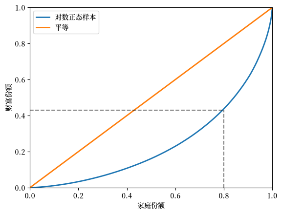
Fig. 6.1 模拟财富数据的洛伦兹曲线#
6.2.3. 洛伦兹曲线（美国数据）#
接下来，我们来看一看美国的收入数据和财富数据。
下面的代码导入了 2016 年的 SCF_plus 数据集的一个子集，
该数据集来源于 消费者财务调查（SCF）。
url = 'https://raw.githubusercontent.com/QuantEcon/data-lectures/main/lectures/SCF_plus_mini.csv'
df = pd.read_csv(url)
df_income_wealth = df.dropna()
df_income_wealth.head(n=5)
| year | n_wealth | t_income | l_income | weights | nw_groups | ti_groups | |
|---|---|---|---|---|---|---|---|
| 0 | 1950 | 266933.75 | 55483.027 | 0.0 | 0.998732 | 50-90% | 50-90% |
| 1 | 1950 | 87434.46 | 55483.027 | 0.0 | 0.998732 | 50-90% | 50-90% |
| 2 | 1950 | 795034.94 | 55483.027 | 0.0 | 0.998732 | Top 10% | 50-90% |
| 3 | 1950 | 94531.78 | 55483.027 | 0.0 | 0.998732 | 50-90% | 50-90% |
| 4 | 1950 | 166081.03 | 55483.027 | 0.0 | 0.998732 | 50-90% | 50-90% |
接下来我们用存储在数据框 df_income_wealth 中的数据来生成洛伦兹曲线。
（接下来的代码会稍微复杂一些，因为我们需要根据 SCF 提供的人口权重来调整数据。）
现在我们绘制2016年美国的净财富、总收入和劳动收入的洛伦兹曲线。
总收入是家庭所有收入来源的总和，包括劳动收入但不包括资本收益。
(所有收入均用税前收入衡量。)
fig, ax = plt.subplots()
ax.plot(f_vals_nw[-1], l_vals_nw[-1], label=f'净财富')
ax.plot(f_vals_ti[-1], l_vals_ti[-1], label=f'总收入')
ax.plot(f_vals_li[-1], l_vals_li[-1], label=f'劳动收入')
ax.plot(f_vals_nw[-1], f_vals_nw[-1], label=f'平等')
ax.set_xlabel("家庭份额")
ax.set_ylabel("收入/财富份额")
ax.legend()
plt.show()
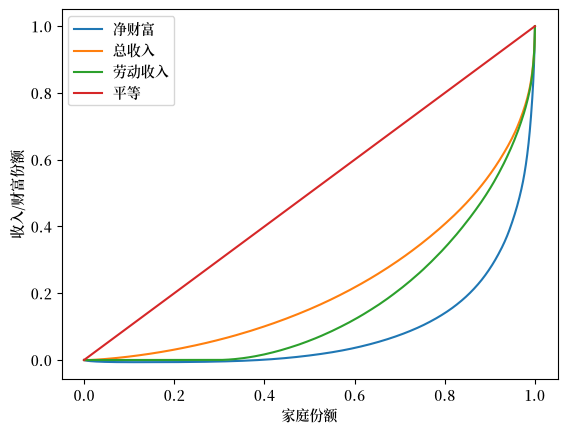
Fig. 6.2 2016年美国洛伦兹曲线#
从图中可以得到一个关键发现，财富不平等比收入不平等更为极端。
6.3. 基尼系数#
洛伦兹曲线提供了不平等分布的可视化表示。
另一种研究收入和财富不平等的方法是通过基尼系数。
在本节中，我们讨论基尼系数及其与洛伦兹曲线的关系。
6.3.1. 定义#
如前所述，假设样本 \(w_1, \ldots, w_n\) 已按从小到大的顺序排列。
基尼系数的定义如下
Definition 6.2
基尼系数与洛伦兹曲线密切相关。
事实上，我们可以证明基尼系数的值是平等线与洛伦兹曲线之间面积的两倍（例如，Fig. 6.3 中的阴影区域）。
其思想是，\(G=0\) 表示完全平等，而 \(G=1\) 表示完全不平等。
fig, ax = plt.subplots()
f_vals, l_vals = lorenz_curve(sample)
ax.plot(f_vals, l_vals, label=f'对数正态样本', lw=2)
ax.plot(f_vals, f_vals, label='平等', lw=2)
ax.fill_between(f_vals, l_vals, f_vals, alpha=0.06)
ax.set_ylim((0, 1))
ax.set_xlim((0, 1))
ax.text(0.04, 0.5, r'$G = 2 \times$ 阴影区域')
ax.set_xlabel("家庭份额 (%)")
ax.set_ylabel("财富份额 (%)")
ax.legend()
plt.show()
findfont: Failed to find font weight normal, now using 600.
{kind=link}
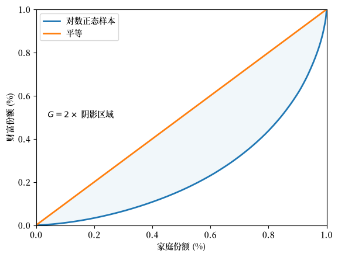
Fig. 6.3 基尼系数（模拟财富数据）#
基尼系数还可以表示为
其中 \(A\) 是45度的完美平等线与洛伦兹曲线之间的区域的面积，\(B\) 是洛伦兹曲线以下的区域的面积 —— 参见 Fig. 6.4。
fig, ax = plt.subplots()
f_vals, l_vals = lorenz_curve(sample)
ax.plot(f_vals, l_vals, label='对数正态样本', lw=2)
ax.plot(f_vals, f_vals, label='平等', lw=2)
ax.fill_between(f_vals, l_vals, f_vals, alpha=0.06)
ax.fill_between(f_vals, l_vals, np.zeros_like(f_vals), alpha=0.06)
ax.set_ylim((0, 1))
ax.set_xlim((0, 1))
ax.text(0.55, 0.4, 'A')
ax.text(0.75, 0.15, 'B')
ax.set_xlabel("家庭份额")
ax.set_ylabel("财富份额")
ax.legend()
plt.show()
{kind=link}
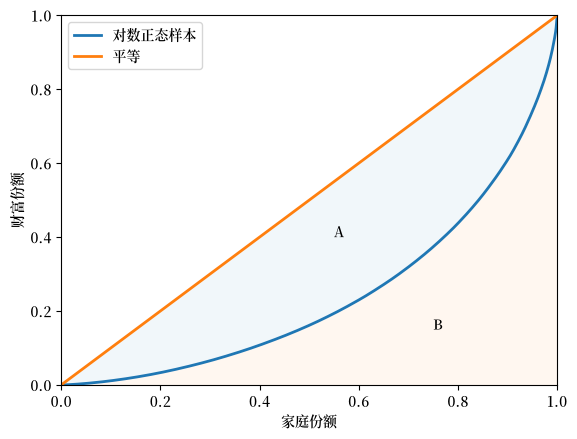
Fig. 6.4 洛伦兹曲线和基尼系数#
See also
在全球数据网站 (Our World in Data) 上有一个用图表阐述洛伦兹曲线和基尼系数的网页
6.3.2. 模拟数据的基尼系数#
让我们通过一些模拟数据来研究基尼系数。
下面的代码将从样本中计算基尼系数。
def gini_coefficient(y):
r"""
基尼不平等指数
参数
----------
y : array_like(float)
每个个体的收入/财富数组。
排序与否均可
返回值
-------
基尼指数: float
描述收入/财富数组不平等的基尼指数
参考资料
----------
https://en.wikipedia.org/wiki/Gini_coefficient
"""
n = len(y)
i_sum = np.zeros(n)
for i in range(n):
for j in range(n):
i_sum[i] += abs(y[i] - y[j])
return np.sum(i_sum) / (2 * n * np.sum(y))
现在我们可以计算五个不同总体的基尼系数。
其中，每个总体都是从参数为 \(\mu\)（均值）和 \(\sigma\)（标准差）的对数正态分布中生成的。
为了创建这五个总体，我们在 \(0.2\) 到 \(4\) 的网格上变化 \(\sigma\)，网格长度为 \(5\)。
在每种情况下，我们都设定 \(\mu = - \sigma^2 / 2\)。
这意味着分布的均值不会随 \(\sigma\) 改变。
你可以通过查找对数正态分布均值的表达式来验证这一点。
%%time
k = 5
σ_vals = np.linspace(0.2, 4, k)
n = 2_000
ginis = []
for σ in σ_vals:
μ = -σ**2 / 2
y = np.exp(μ + σ * np.random.randn(n))
ginis.append(gini_coefficient(y))
CPU times: user 7.3 s, sys: 1.54 ms, total: 7.3 s
Wall time: 7.3 s
让我们构建一个返回图形的函数（便于我们之后继续使用它）。
def plot_inequality_measures(x, y, legend, xlabel, ylabel, title=None):
fig, ax = plt.subplots()
ax.plot(x, y, marker='o', label=legend)
ax.set_xlabel(xlabel)
ax.set_ylabel(ylabel)
if title is not None:
ax.set_title(title)
ax.legend()
return fig, ax
fix, ax = plot_inequality_measures(σ_vals,
ginis,
'模拟数据',
r'$\sigma$',
'基尼系数')
plt.show()
{kind=link}
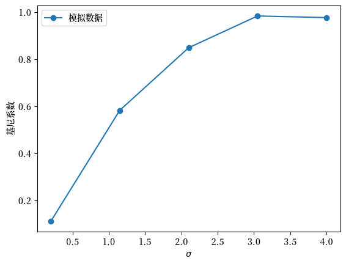
Fig. 6.5 模拟数据的基尼系数#
根据基尼系数，图表显示不平等随着 \(\sigma\) 增加而上升。
6.3.3. 美国收入的基尼系数#
让我们来看一下美国收入分布的基尼系数。
我们使用 wbgapi，从世界银行获得预先计算的基尼系数（基于收入）。
我们使用前面导入的 wbgapi 包，搜索世界银行数据中的基尼系数以找到系列 ID。
wb.search("gini")
Series
| ID | Name | Field | Value |
|---|---|---|---|
| SI.POV.GINI | Developmentrelevance | ...tracks the number of economies with high inequality, defined as those with a Gini index greater than 0.4... | |
| SI.POV.GINI | IndicatorName | Gini index | |
| SI.POV.GINI | Limitationsandexceptions | ...Gini coefficients are not unique. It is possible for two different Lorenz curves to... | |
| SI.POV.GINI | Longdefinition | ...Gini index measures the extent to which the distribution of income (or, in some... | |
| SI.POV.GINI | Statisticalconceptandmethodology | ...Methodology: The Gini index measures the area between the Lorenz curve and a hypothetical line of... | |
| SI.POV.GINI.FS | IndicatorName | GINI index (World Bank estimate), first comparable values | |
| SI.POV.GINI.SG | IndicatorName | GINI index (World Bank estimate), second comparable values | |
| SI.POV.GINI.TH | IndicatorName | GINI index (World Bank estimate), third comparable values |
我们现在知道系列 ID 是 SI.POV.GINI。
(另一种找到系列 ID 的方法是使用 世界银行数据门户 并使用 wbgapi 提取数据。)
为了快速掌握数据概况，我们来绘制世界银行数据集中所有国家和所有年份的基尼系数直方图。
# 获取所有国家的基尼数据
gini_all = wb.data.DataFrame("SI.POV.GINI")
# 移除索引中的 'YR' 并将其转为整数
gini_all.columns = gini_all.columns.map(lambda x: int(x.replace('YR','')))
# 创建带有多重索引的长系列数据，以获取全球的最大值和最小值
gini_all = gini_all.unstack(level='economy').dropna()
# 构建直方图
ax = gini_all.plot(kind="hist", bins=20)
ax.set_xlabel("基尼系数")
ax.set_ylabel("频率")
plt.show()
{kind=link}
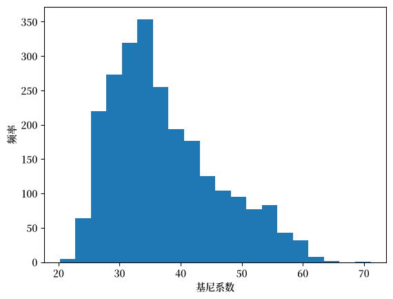
Fig. 6.6 各国基尼系数直方图#
我们可以在 Fig. 6.6 中看到，根据50年所有国家的数据，该指标在20到65之间变化。
现在，我们来提取美国的数据 DataFrame。
data = wb.data.DataFrame("SI.POV.GINI", "USA")
data.head(n=5)
# 移除索引中的 'YR' 并将其转换为整数
data.columns = data.columns.map(lambda x: int(x.replace('YR','')))
(这个包经常返回包含年份信息的数据列。这对于使用 pandas 进行简单绘图来说并不总是很方便，所以在绘图之前对结果进行转置可能会很有用。)
data = data.T # 将年份作为行
data_usa = data['USA'] # 获取美国数据的 pd.Series
让我们来看一下美国的数据。
fig, ax = plt.subplots()
ax = data_usa.plot(ax=ax)
ax.set_ylim(data_usa.min()-1, data_usa.max()+1)
ax.set_ylabel("基尼系数（收入）")
ax.set_xlabel("年份")
plt.show()
{kind=link}
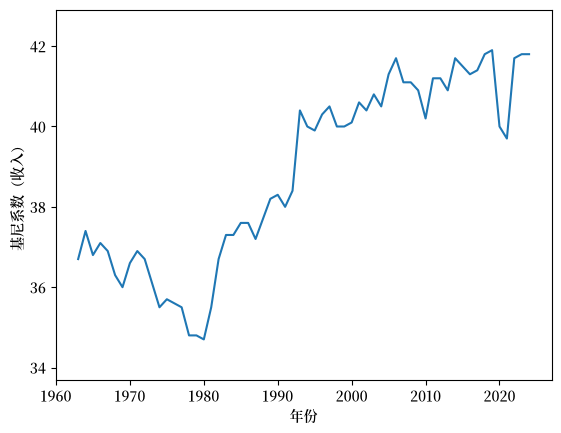
Fig. 6.7 美国收入分布的基尼系数#
如 Fig. 6.7 所示，从1980年到2020年，美国的收入基尼系数呈上升趋势，然后在COVID疫情开始后下降。
6.3.4. 财富的基尼系数#
在上一节中，我们重点使用美国的数据研究了收入的基尼系数。
现在让我们来看一下财富分布的基尼系数。
我们将使用 消费者金融调查 的美国数据。
df_income_wealth.year.describe()
count 509455.000000
mean 1982.122062
std 22.607350
min 1950.000000
25% 1959.000000
50% 1983.000000
75% 2004.000000
max 2016.000000
Name: year, dtype: float64
此笔记本 可以用于计算整个数据集中的此信息。
data_url = 'https://github.com/QuantEcon/lecture-python-intro/raw/main/lectures/_static/lecture_specific/inequality/usa-gini-nwealth-tincome-lincome.csv'
ginis = pd.read_csv(data_url, index_col='year')
ginis.head(n=5)
| n_wealth | t_income | l_income | |
|---|---|---|---|
| year | |||
| 1950 | 0.825733 | 0.442487 | 0.534295 |
| 1953 | 0.805949 | 0.426454 | 0.515898 |
| 1956 | 0.812179 | 0.444269 | 0.534929 |
| 1959 | 0.795207 | 0.437493 | 0.521399 |
| 1962 | 0.808695 | 0.443584 | 0.534513 |
让我们绘制净财富的基尼系数图表。
fig, ax = plt.subplots()
ax.plot(years, ginis["n_wealth"], marker='o')
ax.set_xlabel("年份")
ax.set_ylabel("基尼系数")
plt.show()
{kind=link}
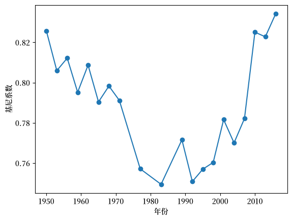
Fig. 6.8 美国净财富的基尼系数#
财富基尼系数的时间序列呈现出 U 形走势，在20世纪80年代初之前，基尼系数呈下降趋势，然后迅速上升。
导致这种变化的一个可能的原因是技术的驱动。
然而，我们将在下文中看到，并非所有发达经济体都经历了类似的不平等问题的增长。
6.3.5. 跨国收入不平等的比较#
在本讲义的前面部分，我们使用 wbgapi 获取了多个国家的基尼数据，并将其保存在名为 gini_all 的变量中。
在本节中，我们将使用这些数据来比较几个发达经济体，并看一看它们各自的收入基尼系数的变化。
data = gini_all.unstack()
data.columns
Index(['USA', 'GBR', 'FRA', 'CAN', 'SWE', 'IND', 'ITA', 'ISR', 'NOR', 'PAN',
...
'LBN', 'ZWE', 'NRU', 'ARE', 'MMR', 'BRB', 'QAT', 'GRD', 'MHL', 'GNQ'],
dtype='str', name='economy', length=171)
此数据包中涵盖了167个国家的数据。
我们来比较三个发达经济体：美国、英国和挪威。
ax = data[['USA','GBR', 'NOR']].plot()
ax.set_xlabel('年份')
ax.set_ylabel('基尼系数')
ax.legend(labels=["美国", "英国", "挪威"], title="")
plt.show()
{kind=link}
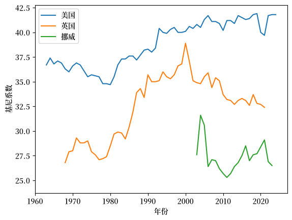
Fig. 6.9 收入基尼系数（美国、英国和挪威）#
我们发现挪威的数据时间序列较短。
让我们仔细检查底层数据，看看是否可以修正这个问题。
data[['NOR']].dropna().head(n=5)
| economy | NOR |
|---|---|
| 1979 | 26.9 |
| 1986 | 24.6 |
| 1991 | 25.2 |
| 1995 | 26.0 |
| 2000 | 27.4 |
此数据包中挪威的数据可以追溯到1979年，但时间序列中存在空缺，所以 matplotlib 没有显示这些数据点。
我们可以使用 .ffill() 方法来复制并前移序列中的最后已知值，以填补这些空缺。
data['NOR'] = data['NOR'].ffill()
ax = data[['USA','GBR', 'NOR']].plot()
ax.set_xlabel('年份')
ax.set_ylabel('基尼系数')
ax.legend(labels=["美国", "英国", "挪威"], title="")
plt.show()
{kind=link}
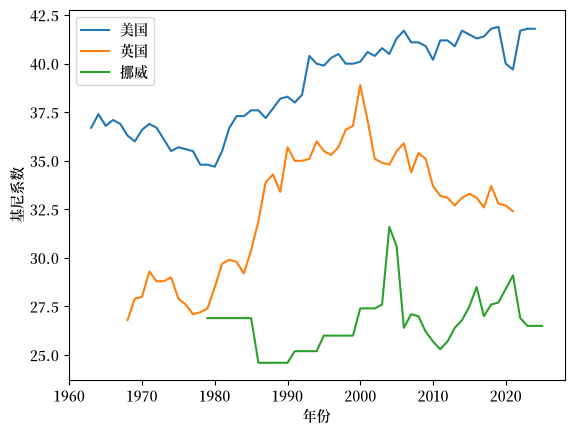
Fig. 6.10 收入基尼系数（美国、英国和挪威）#
从这个图中我们可以观察到，与英国和挪威相比，美国的基尼系数更高（即收入不平等程度更高）。
挪威在这三个经济体中基尼系数最低，而且基尼系数没有上升的趋势。
6.3.6. 基尼系数与人均GDP（随时间变化）#
我们还可以看一看基尼系数与人均GDP的比较（随时间变化）。
让我们再次关注美国、挪威和英国。
countries = ['USA', 'NOR', 'GBR']
gdppc = wb.data.DataFrame("NY.GDP.PCAP.KD", countries)
# 移除索引中的 'YR' 并将其转换为整数
gdppc.columns = gdppc.columns.map(lambda x: int(x.replace('YR','')))
gdppc = gdppc.T
我们可以重新整理数据，以便绘制不同时期的基尼系数和人均GDP。
plot_data = pd.DataFrame(data[countries].unstack())
plot_data.index.names = ['country', 'year']
plot_data.columns = ['gini']
现在我们将人均GDP数据整理成可以与 plot_data 合并的格式。
pgdppc = pd.DataFrame(gdppc.unstack())
pgdppc.index.names = ['country', 'year']
pgdppc.columns = ['gdppc']
plot_data = plot_data.merge(pgdppc, left_index=True, right_index=True)
plot_data.reset_index(inplace=True)
现在我们使用 Plotly 绘制一张图表，其中 y 轴表示人均GDP，x 轴表示基尼系数。
min_year = plot_data.year.min()
max_year = plot_data.year.max()
这三个国家的时间序列开始和结束的年份不同。
我们将在数据中添加年份掩码，以提高图表的清晰度，包括显示每个国家时间序列不同的结束年份。
labels = [1979, 1986, 1991, 1995, 2000, 2020, 2021, 2022] + \
list(range(min_year,max_year,5))
plot_data.year = plot_data.year.map(lambda x: x if x in labels else None)
fig = px.line(plot_data,
x = "gini",
y = "gdppc",
color = "country",
text = "year",
height = 800,
labels = {"gini" : "基尼系数", "gdppc" : "人均GDP"}
)
fig.for_each_trace(lambda t: t.update(name={'USA': '美国', 'GBR': '英国', 'NOR': '挪威'}[t.name]))
fig.update_traces(textposition="bottom right")
fig.show()
此图表显示，所有三个西方经济体的人均GDP随着时间增长，而基尼系数则有所波动。
从80年代初开始，英国和美国的经济都经历了收入不平等程度的增加。
有趣的是，自2000年以来，英国的收入不平等程度有所下降，而美国则表现出持续且稳定的水平，基尼系数约为40。
6.4. 前10%比例#
另一个受欢迎的不平等衡量指标是前10%比例。
在本节中，我们展示如何计算前10%比例。
6.4.1. 定义#
如前所述，假设样本 \(w_1, \ldots, w_n\) 已按从小到大的顺序排列。
给定上面定义的洛伦兹曲线 \(y = L(x)\)，前 \(100 \times p \%\) 的比例定义为
这里 \(\lfloor \cdot \rfloor\) 是向下取整函数，它将任何数字向下取整为小于或等于该数的整数。
以下代码使用数据框 df_income_wealth 中的数据生成另一个数据框 df_topshares。
df_topshares 存储了1950年至2016年美国总收入、劳动收入和净财富的前10%比例。
接下来让我们绘制前10%比例的图表。
fig, ax = plt.subplots()
ax.plot(years, df_topshares["topshare_l_income"],
marker='o', label="劳动收入")
ax.plot(years, df_topshares["topshare_n_wealth"],
marker='o', label="净财富")
ax.plot(years, df_topshares["topshare_t_income"],
marker='o', label="总收入")
ax.set_xlabel("年份")
ax.set_ylabel(r"前 $10\%$ 比例")
ax.legend()
plt.show()
{kind=link}
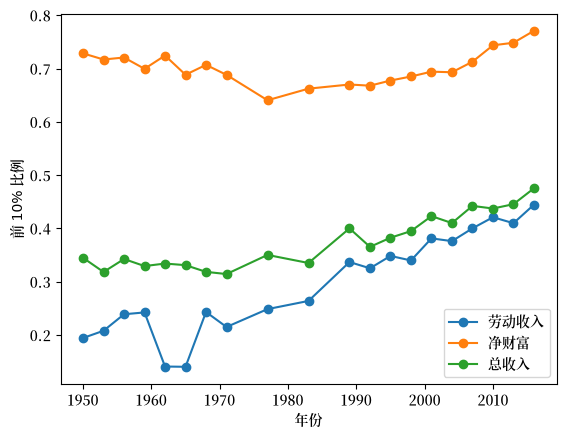
Fig. 6.11 美国前10%比例#
6.5. 练习#
Exercise 6.1
使用模拟数据来计算对数正态分布的前10%份额，这些对数正态分布与随机变量 \(w_\sigma = \exp(\mu + \sigma Z)\) 相关联，其中 \(Z \sim N(0, 1)\) 且 \(\sigma\) 在一个从 \(0.2\) 到 \(4\) 的有限网格上变化。
随着 \(\sigma\) 的增加，\(w_\sigma\) 的方差也在增加。
为了关注波动性，在每个步骤调整 \(\mu\) ，以保持等式 \(\mu = -\sigma^2 / 2\) 成立。
对于每个 \(\sigma\)，生成2000个 \(w_\sigma\) 的独立抽样，并计算洛伦兹曲线和基尼系数。
证明更高的方差会在样本中产生更多的分散，从而导致更大的不平等。
Solution to Exercise 6.1
这是一种解法：
def calculate_top_share(s, p=0.1):
s = np.sort(s)
n = len(s)
index = int(n * (1 - p))
return s[index:].sum() / s.sum()
k = 5
σ_vals = np.linspace(0.2, 4, k)
n = 2_000
topshares = []
ginis = []
f_vals = []
l_vals = []
for σ in σ_vals:
μ = -σ ** 2 / 2
y = np.exp(μ + σ * np.random.randn(n))
f_val, l_val = lorenz_curve(y)
f_vals.append(f_val)
l_vals.append(l_val)
ginis.append(gini_coefficient(y))
topshares.append(calculate_top_share(y))
fig, ax = plot_inequality_measures(σ_vals,
topshares,
"模拟数据",
"$\sigma$",
"前 $10\%$ 比例",
"模拟数据的前10%比例")
plt.show()
findfont: Failed to find font weight normal, now using 600.
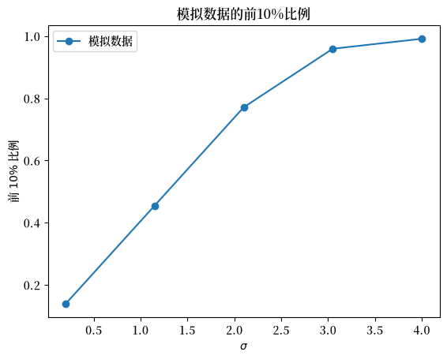
fig, ax = plot_inequality_measures(σ_vals,
ginis,
"模拟数据",
"$\sigma$",
"基尼系数",
"模拟数据的基尼系数")
plt.show()
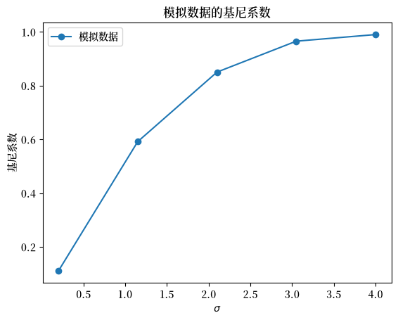
fig, ax = plt.subplots()
ax.plot([0,1],[0,1], label=f"平等")
for i in range(len(f_vals)):
ax.plot(f_vals[i], l_vals[i], label=f"$\sigma$ = {σ_vals[i]}")
ax.set_title("模拟数据的洛伦兹曲线")
plt.legend()
plt.show()
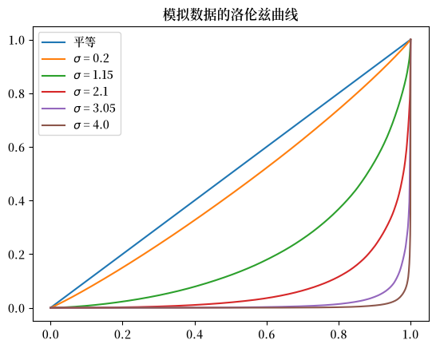
Exercise 6.2
根据前10%比例的定义 (6.1)，我们也可以使用洛伦兹曲线计算前百分位比例。
使用洛伦兹曲线数据 f_vals_nw, l_vals_nw 和线性插值，计算美国净财富的前10%比例。
绘制由洛伦兹曲线生成的前10%比例与从数据近似得出的前10%比例。
Solution to Exercise 6.2
这是一种解法：
def lorenz2top(f_val, l_val, p=0.1):
t = lambda x: np.interp(x, f_val, l_val)
return 1- t(1 - p)
top_shares_nw = []
for f_val, l_val in zip(f_vals_nw, l_vals_nw):
top_shares_nw.append(lorenz2top(f_val, l_val))
fig, ax = plt.subplots()
ax.plot(years, df_topshares["topshare_n_wealth"], marker='o',\
label="净财富-近似值")
ax.plot(years, top_shares_nw, marker='o', label="净财富-洛伦兹曲线")
ax.set_xlabel("年份")
ax.set_ylabel("前 $10\%$ 比例")
ax.set_title('美国前10%比例：近似值 vs 洛伦兹曲线')
ax.legend()
plt.show()
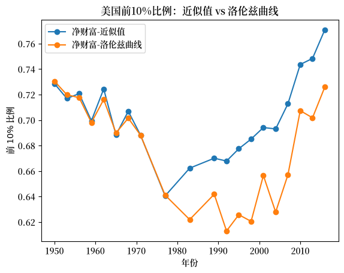
Exercise 6.3
此代码循环计算基于收入或财富数据的基尼系数。
该函数可以通过向量化改写，从而大大提高在 python 中的计算效率。
使用 numpy 和向量化代码来重写 gini_coefficient 函数。
你可以比较新函数与上面函数的输出，并注意速度差异。
Solution to Exercise 6.3
我们先来看看存储在 df_income_wealth 中的美国原始数据
df_income_wealth.describe()
| year | n_wealth | t_income | l_income | weights | |
|---|---|---|---|---|---|
| count | 509455.000000 | 5.094550e+05 | 5.094550e+05 | 5.094550e+05 | 509455.000000 |
| mean | 1982.122062 | 4.512145e+06 | 3.255242e+05 | 9.525005e+04 | 3.294007 |
| std | 22.607350 | 3.477071e+07 | 3.160138e+06 | 8.316296e+05 | 2.671516 |
| min | 1950.000000 | -2.340803e+08 | -8.001954e+07 | 0.000000e+00 | 0.000000 |
| 25% | 1959.000000 | 1.357817e+04 | 2.614322e+04 | 0.000000e+00 | 1.207430 |
| 50% | 1983.000000 | 8.484058e+04 | 4.812237e+04 | 3.247179e+04 | 2.380133 |
| 75% | 2004.000000 | 3.622574e+05 | 9.077778e+04 | 6.582137e+04 | 5.017505 |
| max | 2016.000000 | 2.928346e+09 | 3.056805e+08 | 1.115575e+08 | 31.052229 |
df_income_wealth.head(n=4)
| year | n_wealth | t_income | l_income | weights | nw_groups | ti_groups | |
|---|---|---|---|---|---|---|---|
| 0 | 1950 | 266933.75 | 55483.027 | 0.0 | 0.998732 | 50-90% | 50-90% |
| 1 | 1950 | 87434.46 | 55483.027 | 0.0 | 0.998732 | 50-90% | 50-90% |
| 2 | 1950 | 795034.94 | 55483.027 | 0.0 | 0.998732 | Top 10% | 50-90% |
| 3 | 1950 | 94531.78 | 55483.027 | 0.0 | 0.998732 | 50-90% | 50-90% |
我们将重点关注财富变量 n_wealth 来计算2016年的基尼系数。
data = df_income_wealth[df_income_wealth.year == 2016].sample(3000, random_state=1)
data.head(n=2)
| year | n_wealth | t_income | l_income | weights | nw_groups | ti_groups | |
|---|---|---|---|---|---|---|---|
| 479748 | 2016 | 0.0 | 9214.991 | 0.0 | 4.546196 | 0-50% | 0-50% |
| 495754 | 2016 | 6007000.0 | 36454.914 | 0.0 | 2.925190 | Top 10% | 0-50% |
我们可以首先使用上述讲义中定义的函数计算基尼系数。
gini_coefficient(data.n_wealth.values)
np.float64(0.9300769449032591)
现在我们可以使用 numpy 编写一个向量化版本。
def gini(y):
n = len(y)
y_1 = np.reshape(y, (n, 1))
y_2 = np.reshape(y, (1, n))
g_sum = np.sum(np.abs(y_1 - y_2))
return g_sum / (2 * n * np.sum(y))
gini(data.n_wealth.values)
np.float64(0.9300769449032592)
让我们像之前一样通过从对数正态分布中抽取样本来模拟五个总体。
k = 5
σ_vals = np.linspace(0.2, 4, k)
n = 2_000
σ_vals = σ_vals.reshape((k,1))
μ_vals = -σ_vals**2/2
y_vals = np.exp(μ_vals + σ_vals*np.random.randn(n))
我们可以使用向量化函数计算这五个总体的基尼系数，计算时间如下所示：
%%time
gini_coefficients =[]
for i in range(k):
gini_coefficients.append(gini(y_vals[i]))
CPU times: user 32 ms, sys: 1 ms, total: 33 ms
Wall time: 32.8 ms
这表明向量化函数更快。
下面给出了这五个家庭的基尼系数。
gini_coefficients
[np.float64(0.11315929433361223),
np.float64(0.5782743894360309),
np.float64(0.8464682977772734),
np.float64(0.9543430331303524),
np.float64(0.987137840268105)]